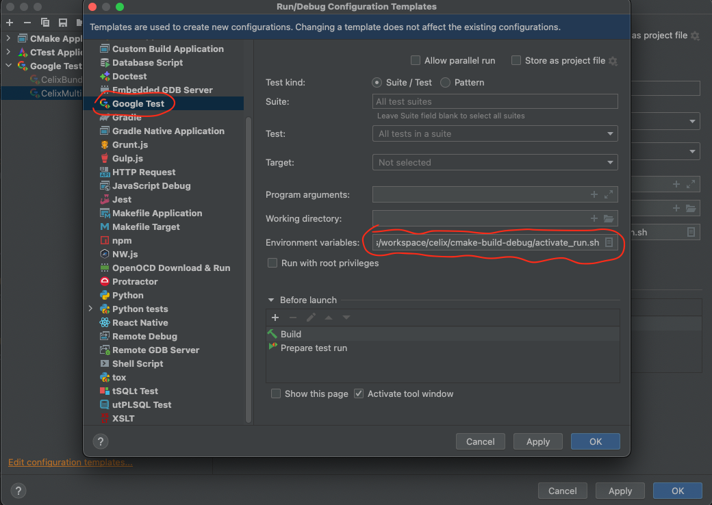

Apache Celix can be build for development in CLion with use of the Conan package manager.
Conan will arrange the building of the Apache Celix dependencies and generate Find
Conan will also generate a conanrun.sh and deactivate_conanrun.sh script that does the environment (de)setup for the
binary locations of the build dependencies (i.e. configures PATH and LD_LIBRARY_PATH/DYLD_LIBRARY_PATH).
C++ code in Celix is default configured for C++14. This is manually changed for C++17 libraries, bundles and test code
by updating the CMAKE_CXX_STANDARD var (set(CMAKE_CXX_STANDARD 17) in their respective CMakelists.txt files.
The downside is that CLion seems to only take into account the top level CMAKE_CXX_STANDARD value.
To ensure that CLion provides the right syntax support for C++17, add -DCMAKE_CXX_STANDARD=17 to the CMake Options
in File -> Settings -> Build, Execution, Deployment -> CMake.
#clone git repo
git clone https://github.com/apache/celix.git
cd celix
#if needed setup conan default and debug profile
conan profile new default --detect
conan profile new debug --detect
conan profile update settings.build_type=Debug debug
# Generate and configure cmake-build-debug directory
# If CLion's CMake Preset Integration has been enabled, then CLion will load available CMake profiles
# from the CMakeUserPresets.json file at the project root, which is generated by `conan install`.
conan install . celix/2.3.0 -pr:b default -pr:h debug -if cmake-build-debug/ -o celix:enable_testing=True -o celix:enable_address_sanitizer=True -o celix:build_all=True -b missing
#optional build
conan build . -bf cmake-build-debug/
#optional setup run env and run tests
cd cmake-build-debug
source conanrun.sh
ctest --verbose
source deactivate_conanrun.sh
The above is for Conan 1.x. Conan 2 has greatly simplified its integration with CLion. Issuing the following command will produce a CMakeUserPresets.json at the project root, which CLion will load automatically to set up CMake profiles. Then Celix can be built within the IDE.
conan install . -pr:b default -pr:h default -s:h build_type=Debug -o celix/*:build_all=True -o celix/*:celix_cxx17=True -o celix/*:enable_testing=True -b missing -o celix/*:enable_address_sanitizer=True -of cmake-build-debug
To ensure that all Conan build dependencies can be found the Run/Debug configurations of CLion needs te be updated.
This can be done under the menu “Run->Edit Configurations…”, then select “Edit configuration templates…” and
then update the “Google Test” template so that the conanrun.sh Conan generated script is sourced in the
“Environment variables” entry.
If the Apache Celix CMake build directory is home/joe/workspace/celix/cmake-build-debug then the value for
“Environment variables” should be: source /home/joe/workspace/celix/cmake-build-debug/conanrun.sh
